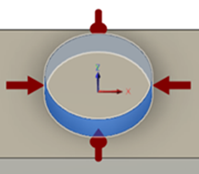

Probing the diameter of a boss
Size tolerance band
The acceptable value of deviation in size of the geometric feature.
This bilateral tolerance is the amount that the size of the geometric feature can vary above or below the expected dimension and still be considered in tolerance. A geometric feature whose deviation is beyond this value is considered out of tolerance.
For example, when probing the diameter of a boss feature, the size tolerance can be thought of as a minimum and maximum diameter band around the actual diameter.
 |
|
Probing the diameter of a boss |
Size tolerance band |